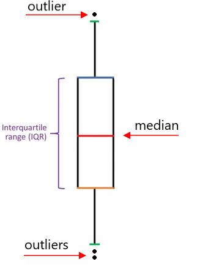

ggplot(data= my_data, aes(x = (optional categorical variable), y = var1)) +
geom_boxplot()Data Visualization
Sections 2.7 - 2.9
Today’s goals
- Create a boxplot
- Create a barplot
- Properly describe a boxplot and barplot
- Display barplots in various ways by category
Artwork by @allison_horst
5NG#4: Boxplots
- A boxplot is used to visualize the distribution of a single numerical variable.
. . .
- Grouped boxplots are particularly useful for comparing the distribution of a numerical variable across a categorical variable. ie: shows the relationship between a numerical and a categorical variable.
. . .
Boxplot syntax in R:
If you switch x and y, it will just change the orientation of the boxplot (personal preference).
5NG#4: Boxplots

There are 3 things that we typically focus on and describe/compare when inspecting a boxplot:
- center
- spread
- shape and outliers
Binary Variables
Consider the titanic dataset, which contains information about passengers on the titanic. If a passenger survived, then the variable Survived = 1.
titanic %>%
glimpse()Rows: 32
Columns: 4
$ Class <chr> "1st", "2nd", "3rd", "Crew", "1st", "2nd", "3rd", "Crew", "1s…
$ Sex <chr> "Male", "Male", "Male", "Male", "Female", "Female", "Female",…
$ Age <chr> "Child", "Child", "Child", "Child", "Child", "Child", "Child"…
$ Survived <fct> 0, 0, 0, 0, 0, 0, 0, 0, 0, 0, 0, 0, 0, 0, 0, 0, 1, 1, 1, 1, 1…. . .
Is Survived a categorical or numerical variable?
. . .
R will read in numerical columns as “numbers” even though these numbers are supposed to represent “categories”.
. . .
To fix this we need to use the factor() function.
Typing factor(Survived) would turn the variable into a “factor”.
5NG#5: Barplots
A barplot is used to visualize the distribution (frequencies) of a single categorical variable.
. . .
geom_bar()is used when we have the raw data and counting how many observations are in each category has to be done (list not yet counted).
. . .
geom_col()is used when we directly have counts of each category in our dataset (pre-counted).
. . .
Barplot syntax in R:
ggplot(data= my_data, aes(x = var1)) +
geom_bar()5NG#5: Barplots continued
When describing a barplot we look for…
- Disparities in the height of the bars.
- Bar with the most observations.
- Bar with the least observations.
- If all the bars are about equal height, then the distribution is uniform.
Example 1: Barplots

Consider the Palmer Penguins dataset.
library(palmerpenguins)
head(penguins)# A tibble: 6 × 8
species island bill_length_mm bill_depth_mm flipper_length_mm body_mass_g
<fct> <fct> <dbl> <dbl> <int> <int>
1 Adelie Torgersen 39.1 18.7 181 3750
2 Adelie Torgersen 39.5 17.4 186 3800
3 Adelie Torgersen 40.3 18 195 3250
4 Adelie Torgersen NA NA NA NA
5 Adelie Torgersen 36.7 19.3 193 3450
6 Adelie Torgersen 39.3 20.6 190 3650
# ℹ 2 more variables: sex <fct>, year <int>We are interested in plotting the distribution of species.
Are we using geom_bar() or geom_col()?
Example 2: Barplots
What if we want to visualize the distribution of sex in each of the species. There are 4 main ways to visualize multiple levels within a categorical data:
ggplot(data=penguins, aes(x = species, fill = sex)) +
geom_bar()ggplot(data=penguins, aes(x = species, fill = sex)) +
geom_bar(position = "fill") +
ylab("proportion")ggplot(data=penguins, aes(x = species, fill = sex)) +
geom_bar(position = "dodge")ggplot(data=penguins, aes(x = species))+
geom_bar() +
facet_wrap(~ sex)Extra information and resources
“factor” vs “character” variable
- factor has predefined levels and the observation must be one of those levels (limited response options).
- character can take on any string value (think open response options)
- Factors in R